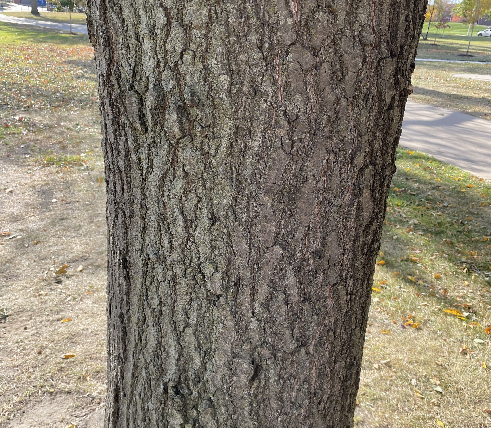
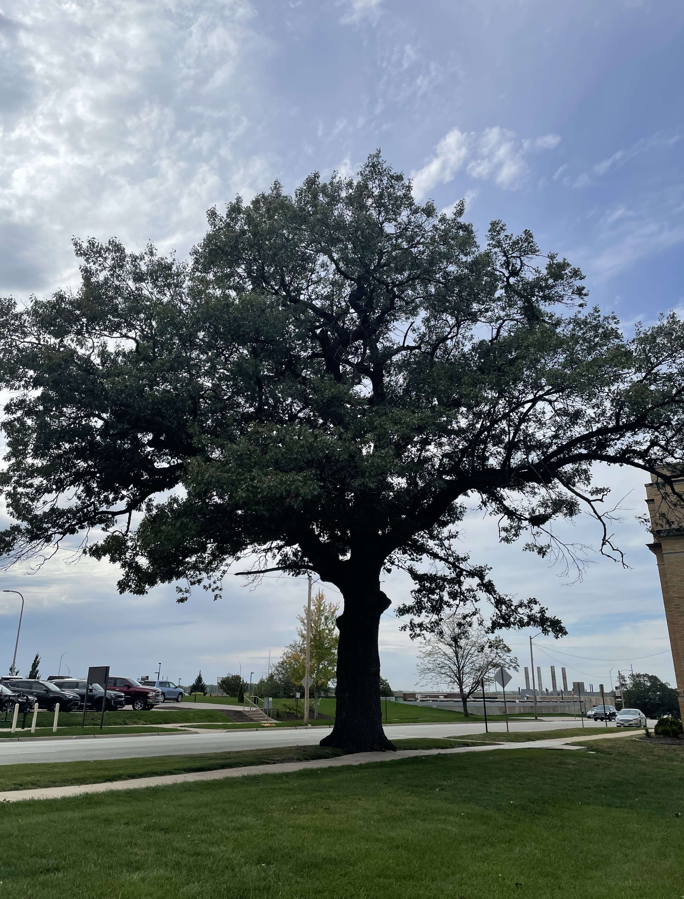

Tree Identification
One important part of connecting with the trees around us is learning to identify the trees we commonly see. Below are some tips and tricks to help you identify some of the most common trees around campus. All pictures are of trees on Coe’s campus.
Oaks
The Oak tree is unambiguously the favorite tree of the College. Acorns are the fruit of Oak trees and have long been a symbol of the College, in addition to being great food for our squirrels. Oak trees are by far the most common tree on campus, with 80 Oak trees on the campus west of College Drive. The Oak tree is also Iowa’s state tree.
Oak trees are easily identifiable by their acorns and leaves. Oak trees are the only trees that produce acorns. The leaves of oak trees can vary substantially, but are usually 5 to 10 inches long with 5 to 9 symmetrically arranged lobes.
Species of Oak tree fall into one of two categories: Red Oaks or White Oaks. The difference has nothing to do with the color of the leaves, but actually the shape of the leaves. Red Oaks—including the Northern Red Oak, Black Oak, and Pin Oak—have pointed lobes. White Oaks—including the White Oak, Swamp White Oak, and Bur Oak—have rounded lobes.
(Northern) Red Oaks
Quercus rubra. There are 18 Northern Red Oaks on the campus west of College Drive. Like all Red Oak varieties, the leaves of Northern Red Oaks ends in a pointed tip, or a bristle tip. The easiest way to distinguish a Northern Red Oak from other Red Oak varieties with bristle tipped leaves is by the fullness of the leaf. While other Red Oak varieties have leaves with narrow lobes, the Northern Red Oak has very wide, filled-in lobes. The bark of Red Oaks is often smoother than similar Oak varieties as well.



Black Oaks
Quercus velutina. The Black Oak is also common around campus, and very similar to the Northern Red Oak. The primary difference is that Black Oaks have leaves with 7 to 9 narrow somewhat narrow lobes. Many of the largest trees on campus are Black Oaks.

Pin Oaks
Quercus palustris. Pin Oaks are less common around campus, but still a valued member of our urban forest. Even more than the leaves of Black Oaks, Pin Oaks have very narrow lobes. Pin Oaks also tend to have few lobes than most Oak varieties, as most leaves only have 5 to 7 lobes compared to other varieties with 7 to 9 lobes.


White Oaks
Quercus alba. There are 7 White Oaks on Coe’s campus west of College Drive, making them somewhat common. Most of the White Oaks we do have are fully matured and the largest trees on campus are often White Oaks. White Oaks have 7 to 9 lobes with rounded ends. These lobes can be somewhat narrow.

Swamp White Oaks
Quercus bicolor. Swamp White Oaks are the most common tree around Coe, with 27 Swamp White Oaks on Coe’s campus west of College Drive. Swamp White Oak leaves are distinctly bulbous compared to other Oak varieties, with lobes that are very wide and shallow compared to other Oak varieties. The bark of Swamp White Oaks often appears in long-strips, while many other Oaks have relatively smooth bark. In the fall, Swamp White Oaks retain their leaves longer than most trees. If you see a tree in late November with crisp light brown leaves still on the tree, there’s a good chance that its a Swamp White Oak.


Bur Oaks
Quercus macrocarpa. Rounding out the set of Oak trees on campus, Bur Oaks make for an interesting variety of Oak. In contrast to Swamp White Oaks, Bur Oak leaves have almost overexaggerated lobes. Often the divot in the leaf (also called the sinus) just above the final lobe is large, creating a very narrow cross section just before the final lobe. The bark of young Bur Oak’s is especially shaggy in appearance.

Maples
Behind Oaks, Maples are the second most common deciduous tree on campus. Maple leaves are very recognizable, with 3 or 5 lobes extending to pointed tips. In general though, differentiating between different varieties of Maple is difficult, as many of the most popular cultivars are hybrids of different Maple varieties.
Sugar Maples
Acer saccharum. Sugar Maples leaves have 5 lobes, with clear rounded out spaces between each lobe. Each lobe is very full and wide, an easy way to differentiate Sugar Maples from Silver Maples (which are common in many places, but not common on Coe’s campus). There are several sub-varieties of Sugar Maple on campus. The Autumn Fest Maple is a variety of a Sugar Maple, prized for its bright colors in the fall. Many of the Autumn Fest Maples on campus were planted in the aftermath of the 2020 derecho. Many of these are on located around Dows and around the academic quad.

Freeman Maples
Acer x freemanii. The Freeman Maple is a popular hybrid tree, a cross between a Red Maple and Silver Maple. Silver Maple leaves are identifiable by their slender lobes, a trait that appears in the Freeman Maple as well. The branches of Freeman Maples tend to be less “swoopy” than a standard Silver Maple, a trait from the Red Maple. Freeman Maples have a brilliant pink-orange color in the fall.


Elms
Ulmus americana. Elm leaves have a distinct egg-like shape that comes to a pointed tip, with ridges that run from the center to the outer edge of the leaf in a slightly asymmetric pattern. At the edge of the leaf, these ridges turn out into small, dull teeth. We have several different varieties of Elm on campus including the Princeton Elm, Cathedral Elm, and Valley Forge Elm. In the fall, the Elms on campus turn a bright yellow color. Oftentimes the edges of the Elm leaves brown first making it look like many of the Elm leaves on campus have spent some time in a toaster.


Honey Locusts
Gleditsia triacanthos v. inermis. Honey Locust trees have leaves that are easily distibuishable from other trees on campus. These leaves have no lobes at all, but have bundles of symmetrical leaflets. These trees turn a bright yellow in the fall. The bark of Honey Locust trees is also distinguishable, usually appearing as long strips of medium thickness, often with a slight mossy-green color. Honey Locust trees are often consider a nuisance tree because a standard Honey Locust has large thorns along its branches and dense patches of thorns on the trunk. All of the Honey Locust trees on Coe’s campus are Thornless Honey Locusts though, so you shouldn’t be afraid to hug any of the Honey Locust trees here.


Scotch Pines
Pinus sylvestris. Scotch Pine trees (also called Scots Pine) are one of the most common trees on campus. The needles of Scotch Pines tend to be somewhat brittle—likely to break if you try to bend them. Mature Scotch Pines have a distinctive orange tint to their bark and branches. You can find many of these trees in the area between Greene and Murray. Unlike Eastern White Pines (also in the area between Greene and Murray), Scotch Pines have spherical pinecones, rather than long cylindrical pinecones.